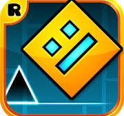

Geometry Dash
Это игра где тебе надо прыгать кубом и перепрыгивать препятствия
Обзорчик
Офис разраба
Подробно о создании
Geometry Dash — компьютерная игра, соединяющая жанры 2D-платформера и ритм-игры, выпущенная изначально для мобильных устройств на iOS/Android, позже и для ПК. Создатель игры — шведский разработчик Роберт Топала, выступающий под псевдонимом RobTop. Игровой процесс заключается в прохождении уровня со множеством препятствий под ритмичную музыку. Помимо этого в игре можно создавать собственные уровни и выкладывать их на сервера, из-за чего вокруг игры сложилось активное сообщество фанатов.
20 декабря 2023 года на персональные компьютеры и мобильные устройства вышло обновление 2.2, в которое был добавлен новый уровень и два новых игровых режима, а также другие улучшения, в том числе для встроенного редактора уровней. Обновление вызвало заметный скачок популярности Geometry Dash среди игроков в Steam.
Самые сложные уровни
Топ1 1 год назад
Топ 1 из 2021 года
топ 1 2 года назад
сейчашний топ 1
Топ 1 2016 года
Топ 1 2017 года
Топ 1 2018 года
Топ 1 2019
Топ 1 2020 года
топ 1 до акерона в 2021 году